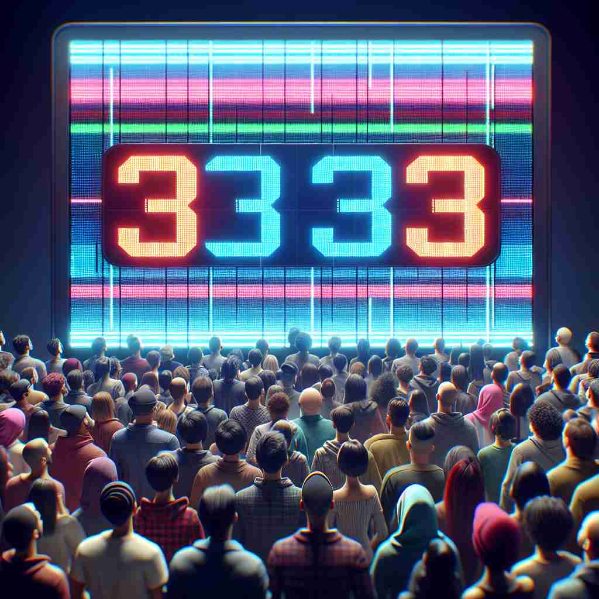

💬 We are excited for the countdown to launch.

💬 The crowd is excited for the countdown to the event.
🔈 ['kaʊntdaʊn]
🗝️ n. the process of counting backwards to zero, especially before an important event
🖼️ 在一个繁忙的航天中心，发射指挥官紧盯着计时器，宣布："发射倒计时开始，10，9，8……"每一个数字都凝聚着期待和紧张，大屏幕上倒数的数字逐渐接近零。所有的目光都集中在即将点燃的火箭上。
🔍 想象一个数字屏幕在倒计时，从大数字逐渐减少到零。这个画面能帮助你记住'countdown'的核心含义：倒数计时。无论是具体的数字倒数，还是事件前的准备期，或是具体的准备步骤，都可以联想到这个倒数的过程。这个核心概念贯穿了'countdown'的各种用法，使其多重含义更易理解和记忆。
💬 We are excited for the countdown to launch.
💬 The crowd is excited for the countdown to the event.
🌳 由基本词 'count'（计算）加上后缀 'down' 组成，表示从高到低的数数过程，尤其用于准备阶段如发射倒计时。
💡 记忆 'countdown' 时，可以联想为从高数到低数的过程，例如火箭发射前的倒计时。可以通过 'count'（数）和 'down'（向下）的组合来记住其意思，即从某个数字开始向下数。
🗝️ n. the period of time leading up to an important event
🖼️ 在一个婚礼准备的场景中，新娘正在和朋友们兴奋地讨论："我们的婚礼倒计时只剩下两天啦！"每个人都在忙碌地准备，装饰会场、试穿礼服，整个氛围都填满了期待。
💬 The countdown to the Olympics has begun with just 100 days to go.
❓ 从倒数计时扩展到事件前的整个时期
🗝️ n. a sequence of steps to be taken in preparation for an event
🖼️ 在一间演播室里，导播正在调度各项工作。他对团队说道："现在开始节目倒计时，检查灯光，音频，摄影机，准备就绪后再开始。"每个步骤都井井有条，确保直播的顺利进行。
💬 The team started their countdown checklist for the rocket launch.
❓ 从数字倒数延伸到事件前的准备步骤